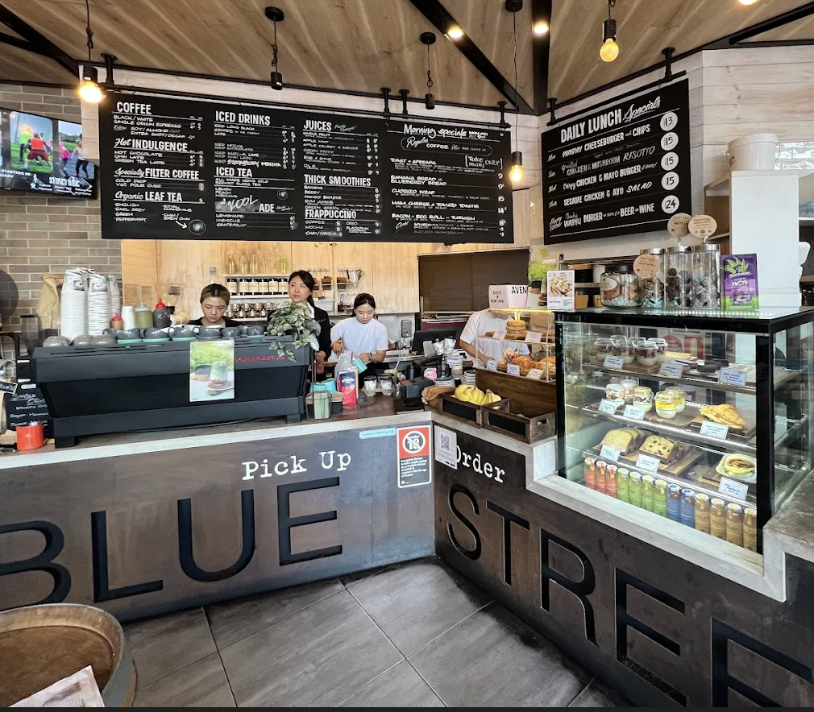
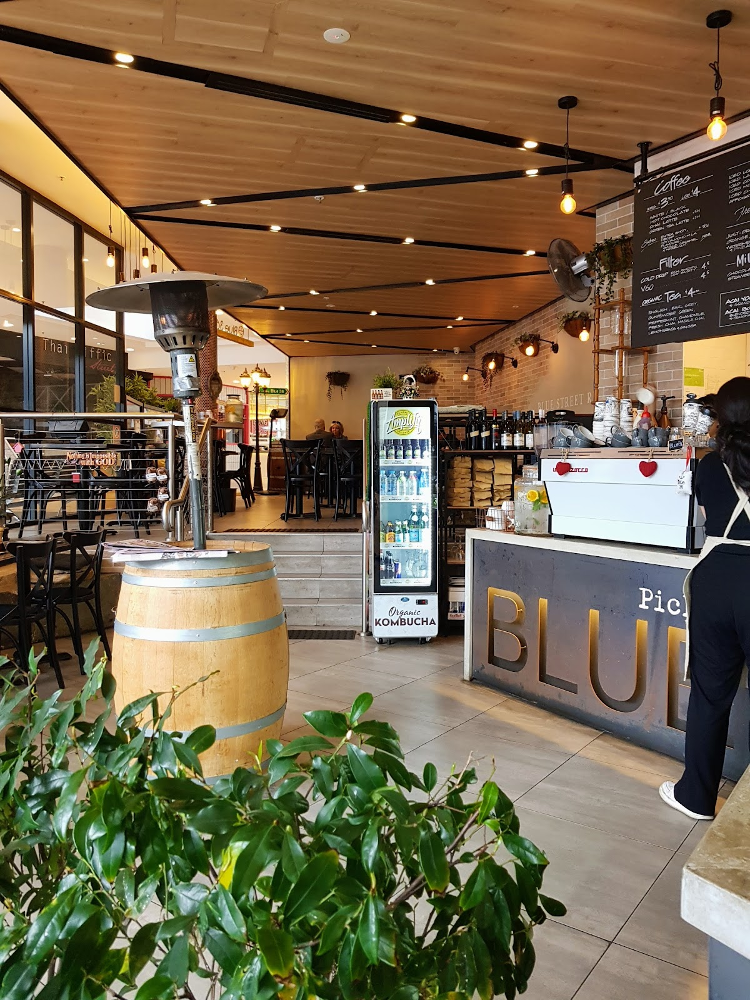

Specialty coffee, all-day brekkie and fresh bowls — the friendly local that's been fuelling North Sydney since dawn, right across from the platform.

“Here at around 6am for a quick breakfast. Excellent service, great coffee — and the pancakes tasted good.”— a regular, on Google
“An absolutely lovely breakfast this morning. The staff were wonderful and my food was delicious — the latte was great too.”
“Walked straight in, menus immediately, very efficient service with warm and friendly staff.”
“Amazing cafe! The staff were professional and very kind. So happy I came in.”

Blue 36 is the cafe right opposite North Sydney station — freshly renovated in 2026 with a bigger kitchen and a brand-new menu, and the same warm welcome it's always had.
Whether it's a 6am flat white before the 7:12, a team breakfast or a quick poke bowl between meetings, the crew get you sorted fast and send you off happy.
Kitchen winds down before close — pop in early for the full menu.